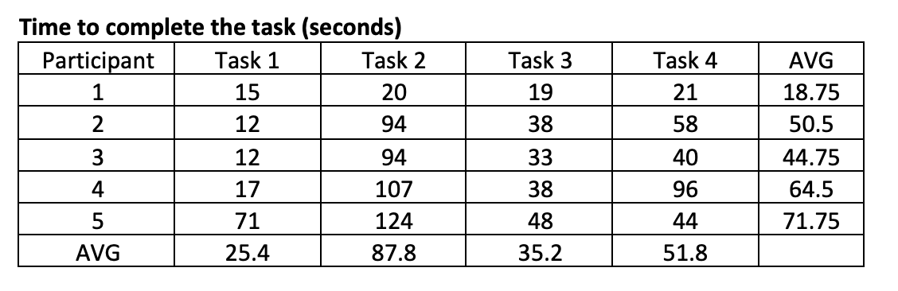
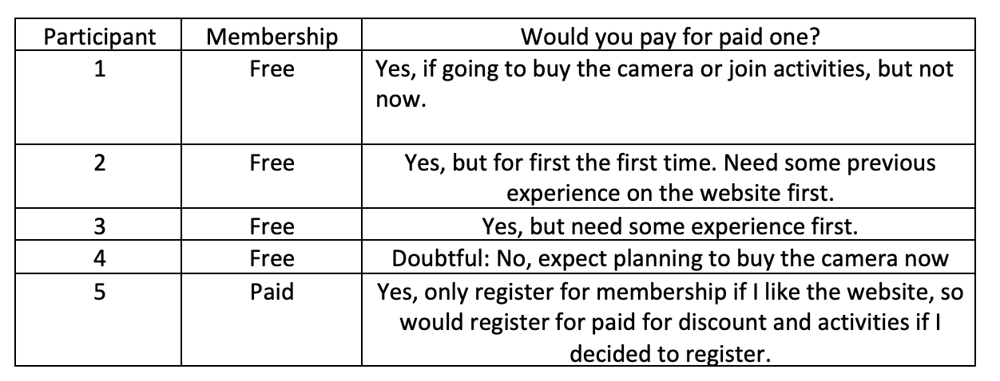
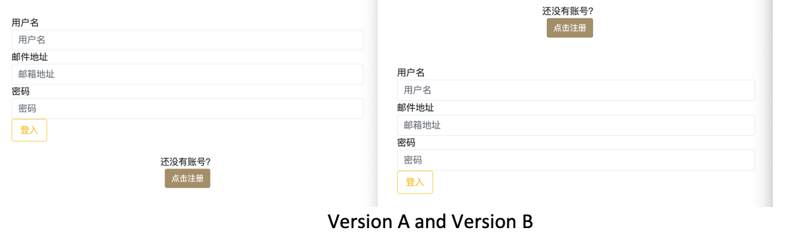
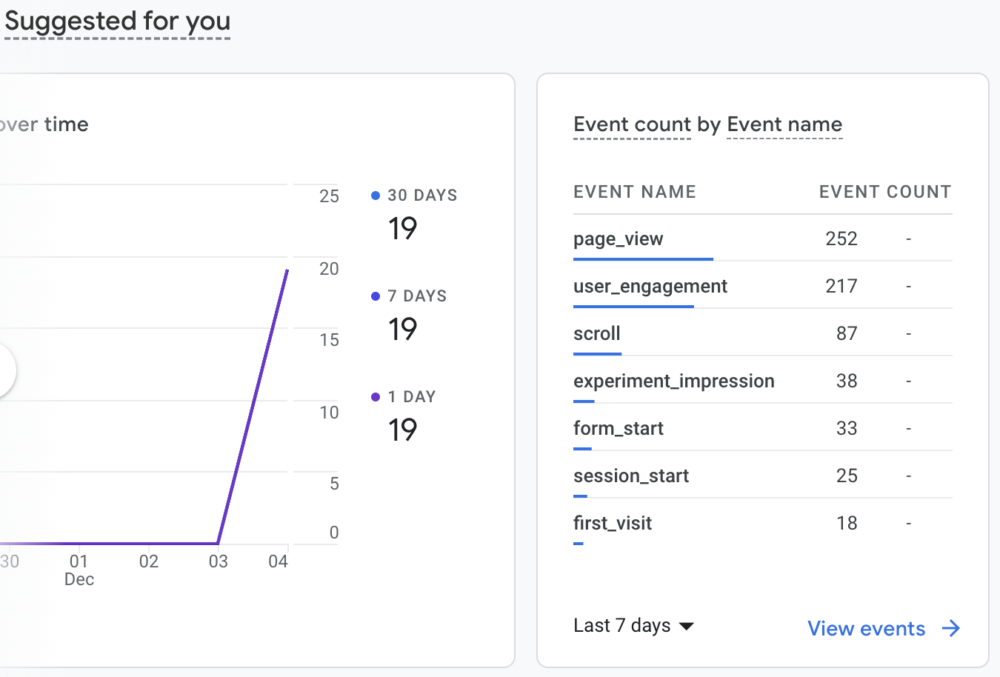
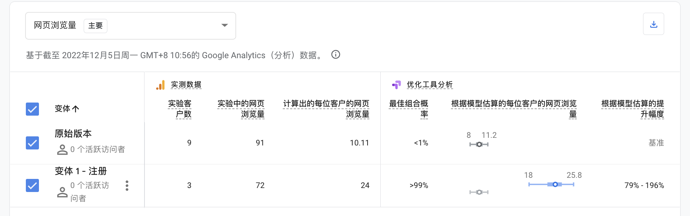

The proposed solution aims to monetize the film journey the problem statement is how might we make the university student who enjoys taking film photos to document his life address the problem of searching, verifying, and organising fragmented film information among various platforms so that he can save time and have an easier film-taking experience? The monetization plan is to charge users for paid membership to enjoy 10% off discount for film cameras and join offline activities for free, otherwise, the offline activities would charge for 10 RMB for fee.
Both usability test and AB test will be conducted to obtain feedback for the validation. The usability test can provide qualitative responses from 5 chosen users from the target persona group. The A/B test is a quantitative method to collect and analyse results coming from a broader audience base regarding the whether people really click the button or submit the form or not.Four usability tasks were designed to test the ease of use of conducting test which is exposed to paid membership:
1. How do you select a film camera?
2. How do you post a new post?
3. What would you do when you want to join offline activities?
4. You going to register for a membership, what would you do?
Three post-test questions were also designed to obtain recommendations for improvement:
1. Please rate the overall process: 7 as very satisfied, 1 as very dissatisfied
2. What difficulties did you encounter in the process?
3. How do you think the page can be improved?
4. You choose xxx membership for task, will you pay for paid membership?
The results are as follows:


People are willing pay for the paid memership when they consider buying a product or joinning in the offline activites.
A/B test:
The A/B testing is designed for the register button on the login page. When designing the original version, I held the concern about whether user would notice the register button or not, there I use the noticeable colored button for it. However, it is still placed at the bottom under the login form, for some screen sizes user needs to scroll to page to see, which is a dangerous setting. However, this setting is the common design we use in our daily life, people have got used to it. Therefore, in my usability test, the variant is the position of the register button, which I position it above the login form, to be more noticeable.

The A/B testing and optimization is still in the process. Here are the data collected so far.

